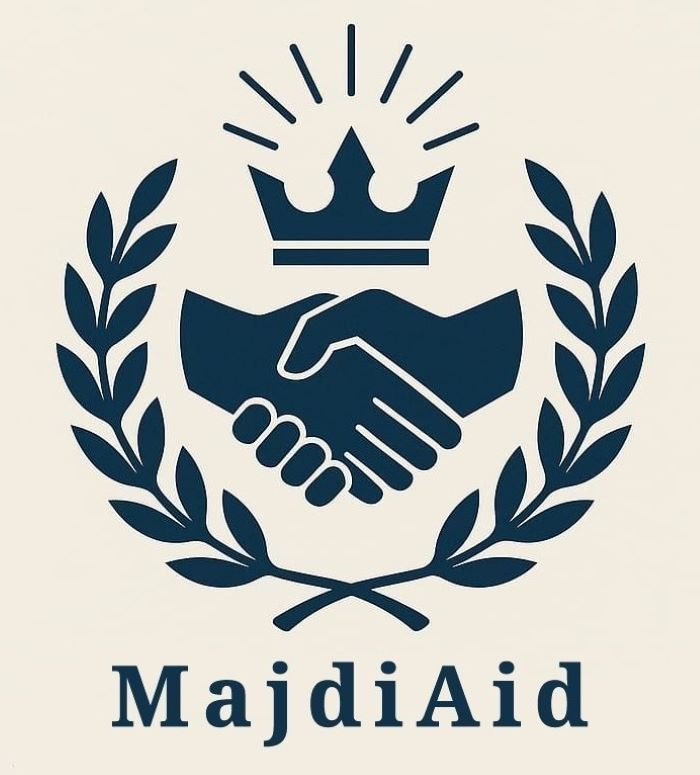

The name Majdi, is of Arabic origin and loosely translated means, Noble/Honorable. The name Majdi, therefore perfectly aligns with the
two core values of the platform.
1. Addressing the individual and community holistically (physically, mentally, emotionally, spiritually and financially), with NOBLE intent.
2. Ensuring every interaction brings HONOR, to the individual and community.
Therefore, the mission at MajdiAid is to uplift individuals communities by making a real and permanent impact, by building a charitable (pay-it-forward) network/community dedicated to inspiring, supporting and uplifting those around us, holistically. MajdiAid therefore welcomes individuals, communities, businesses, NGO's, governmental and political agencies, to work with us directly or by forming partnerships.
The South African political landscape is saturated, with politicians and political groups that serve as nothing more than, lobby groups - groups dedicated to the interests of a particular demographic, rather than serving SOUTH AFRICA and ALL HER PEOPLE. The result is, South Africa is a divided and dying nation with no national goals or chance of success. At UbuntuPath, although we believe race, religion and culture (our diversity) add to the beauty of this great nation, THE MOST IMPORTANT ATTRIBUTE IS SIMPLY BEING, SOUTH AFRICAN.
Our DUTY at UbuntuPath therefore, is to REPRESENT, PROTECT, UPLIFT, AND UNITE EVERY SOUTH AFRICAN - WITHOUT PENALTY, PREJUDICE OR FAVOUR.